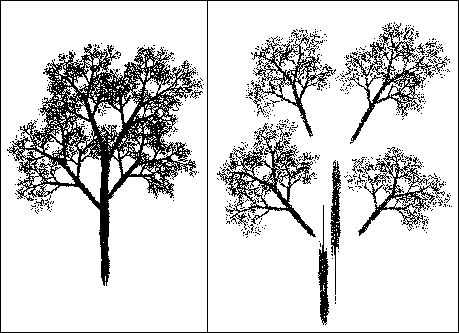
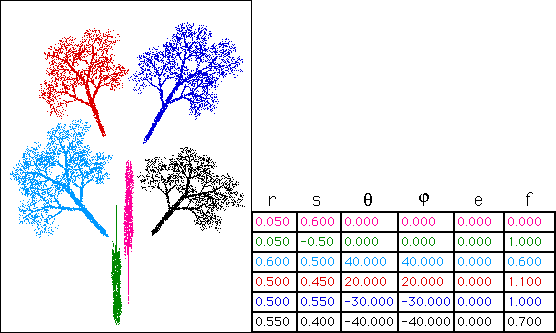
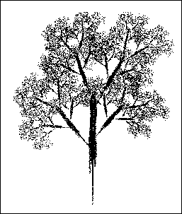

| First, it is easy to see the four main branches of the tree are scaled copies of the whole tree. |
| The pieces have been pulled apart slightly to emphasize the decomposition. |
| The trunk is more complicated. |
| Simply shrinking the tree a lot horizontally works for the top of the trunk, but makes the bottom of the trunk too thin. |
| Two shrunken copies of the tree are needed to make the trunk. |
|  |
| Here are the IFS rules, color coded to match each transformation to the corresponding piece of the tree. |
|  |
| Here is the picture generated by the tree rules, leaving out the second part of the trunk. |
| Do you see why the whole tree looks so raggedy? |
|  |
Return to Natural Fractal Inverse Problems.